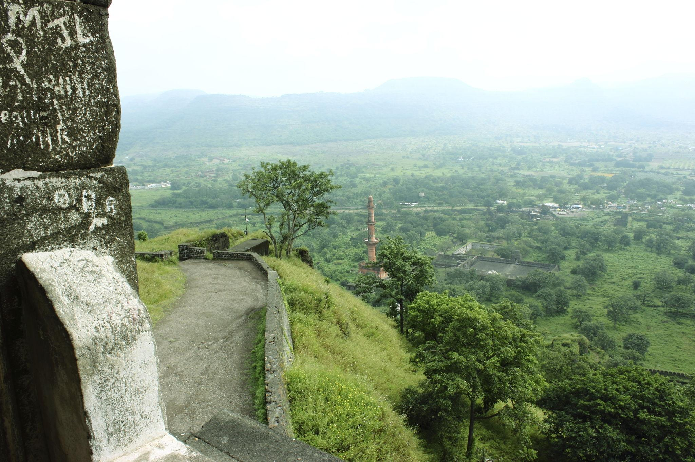
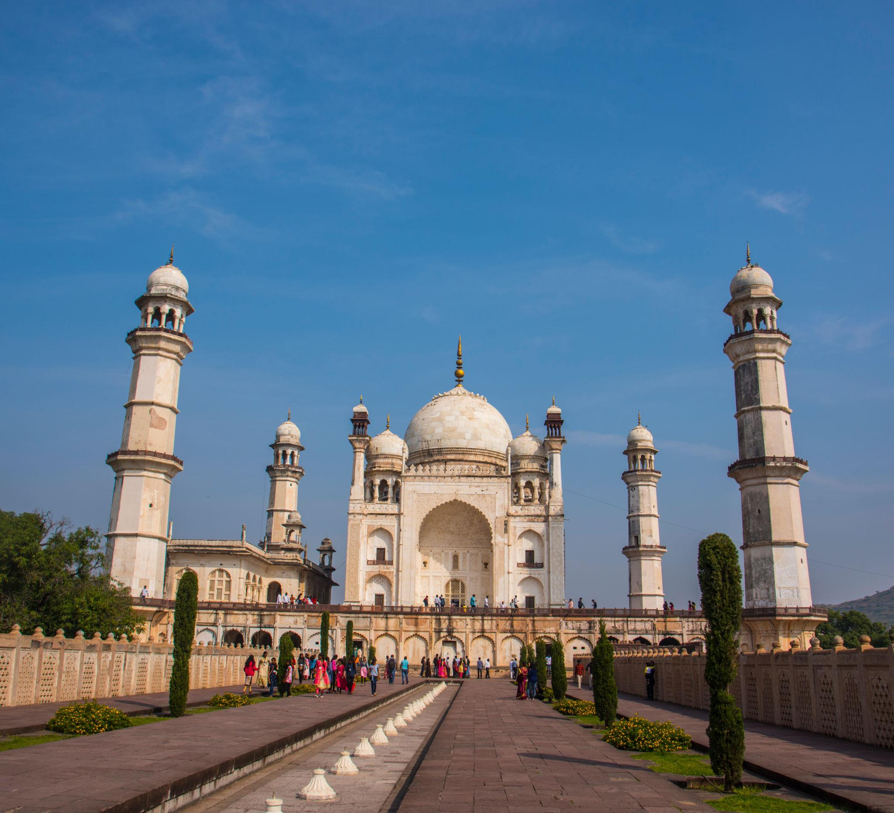
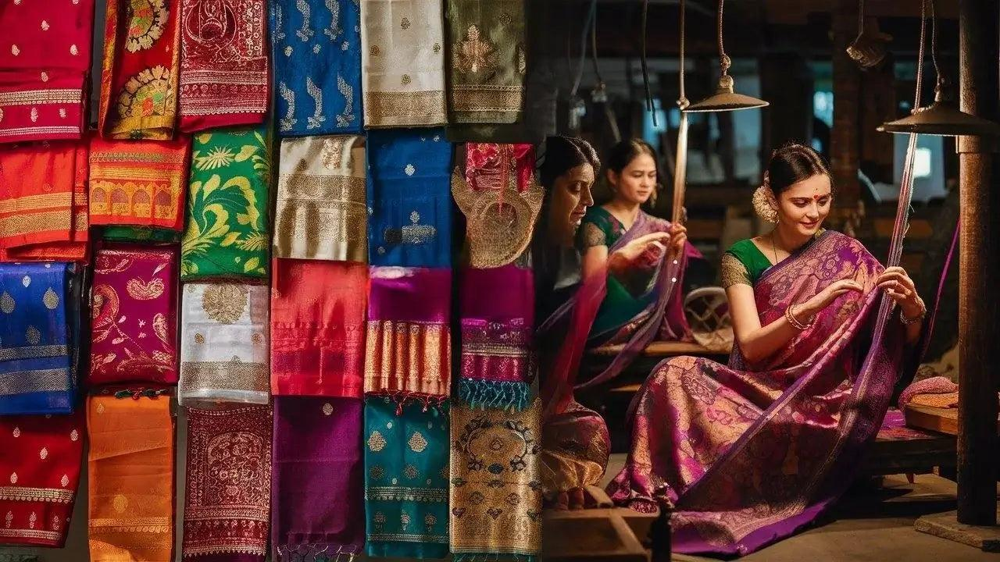
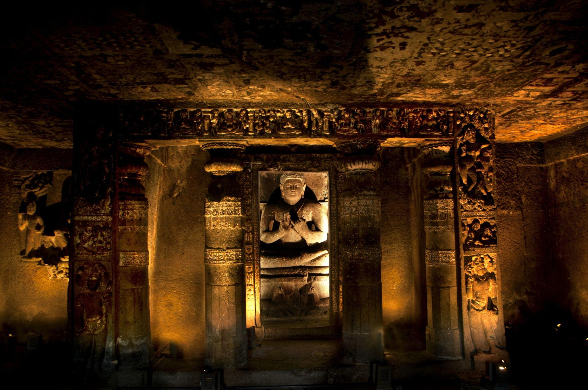
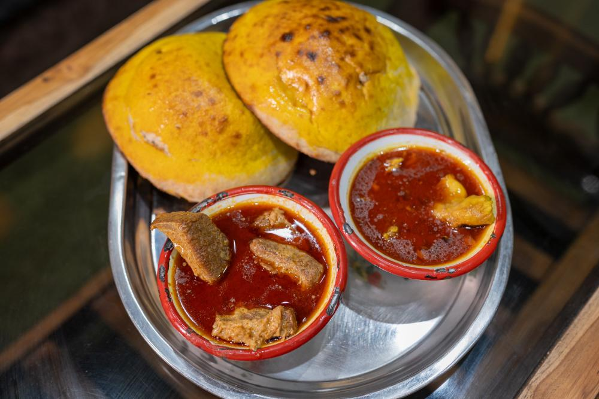
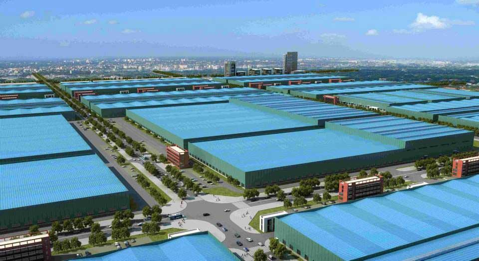
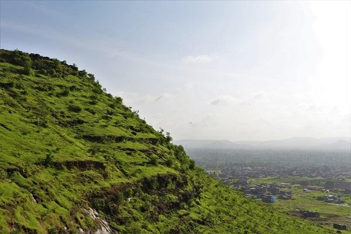
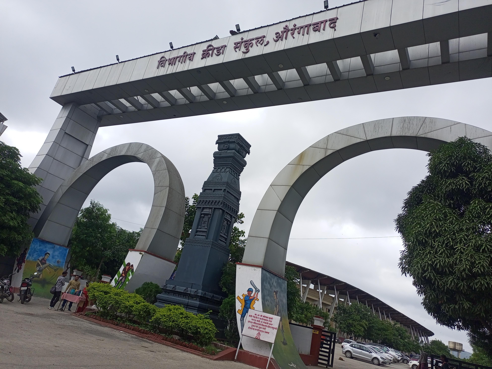

About

The city is officially named Chhatrapati Sambhajinagar and sits in the heart of Maharashtra. It is widely known as the "City of Gates" because it has dozens of beautiful, old stone entryways. Today, it acts as a major urban hub that connects ancient Indian history with fast-growing modern life.
- Location:The city is situated in the central part of Maharashtra, India, nestled within the hilly terrain of the Deccan plateau.
- Famous as: It is globally renowned as the "City of Gates" and is celebrated for housing the majestic Ajanta and Ellora Caves, which are ancient UNESCO World Heritage Sites.
History

A leader named Malik Ambar founded the city in 1610 under the name Khadki. Later, the Mughal Emperor Aurangzeb made it his capital in 1653 and renamed it Aurangabad. The city has seen many rulers over the centuries, including the powerful Mughals, the Marathas, and the Nizams of Hyderabad.
- Founded in 1610 by Malik Ambar as Khadki, the city became the Mughal capital under Emperor Aurangzeb in 1653 and was renamed Aurangabad. It was later ruled by the Nizams of Hyderabad until it joined independent India in 1948. Recently, the city was officially renamed Chhatrapati Sambhajinagar to honor the Maratha ruler, Chhatrapati Sambhaji Maharaj.
Culture

The local culture is a colorful mix of Hindu and Muslim traditions. People celebrate many grand festivals here, and the city is famous for its beautiful classical music and Urdu poetry. It is also famous for making Paithani sarees and Himroo shawls, which are special fabrics woven with real gold and silver threads.
- Main Festivals:People celebrate Ganesh Chaturthi, Diwali, and Eid with great joy and massive street processions.
- Traditional Arts: The city is famous for weaving Himroo shawls and Paithani sarees using real gold and silver threads.
- Language:Marathi is the official language spoken by locals, alongside Hindi and Urdu in everyday conversations.
Tourism

This city is the official tourism capital of Maharashtra and attracts visitors from all over the world. It is home to the Ajanta and Ellora Caves, which are ancient temples carved right into giant rock cliffs. Visitors also love to see Bibi Ka Maqbara, a beautiful monument that looks exactly like a smaller Taj Mahal.
- Ajanta and Ellora Caves: These ancient rock-cut cave temples are UNESCO World Heritage Sites that showcase stunning rock art and sculptures.
- Bibi Ka Maqbara: This beautiful 17th-century marble tomb looks like a smaller Taj Mahal and was built for Aurangzeb's wife.
- Daulatabad Fort: This massive, invincible hilltop fortress features a steep climb, a dark maze, and panoramic views of the city.
Famous Food

The local food is rich, spicy, and full of unique flavors from royal history. The most famous dish is Naan Qalia, which is a slow-cooked meat curry served with a special flatbread. Street food lovers can also enjoy tasty treats like crispy kachoris, spicy chaat, and sweet imartis.
- Famous Food:The city is famous for Naan Qalia, a slow-cooked, spicy meat curry served with special oven-baked flatbread.
- Local Specialty:Dessert lovers flock to try Imarti, a sweet, crispy, orange-colored fried ring soaked in thick sugar syrup.
Economy

The city is a massive industrial powerhouse and one of the fastest-growing business hubs in India. It is a major center for making cars, medicines, and machine parts for global brands. A massive new smart city project called AURIC has also brought big tech and manufacturing companies to the area.
- Key Industries: The city is a major hub for automotive manufacturing, pharmaceuticals, and cotton textiles, led by the AURIC smart industrial city.
- Main Crops:Local farmers primarily grow cotton, jowar (sorghum), and bajra (pearl millet), along with famous sweet limes.
Environment

The city is located on a high, rocky plateau and has a hot, semi-arid climate. It gets most of its water from the Kham River and the nearby Jayakwadi Dam. Local groups work hard to plant trees on the surrounding hills to keep the region green and fight summer droughts.
- Climate: The city has a hot, semi-arid climate with very warm summers and a pleasant, dry winter season.
- Key Rivers:The Kham River flows right through the city, while the larger Godavari River runs nearby.
- Protected Areas:The Gautala Autramghat Sanctuary sits close to the city and protects diverse wildlife like leopards, deer, and birds.
Sports

Sports are a big part of daily life, and the city has many large grounds and stadiums. Cricket, football, and hockey are very popular among the youth who train at the university facilities. People also love traditional Indian sports like Kabaddi and Kho-Kho, and the city often hosts big state-level tournaments.
- Traditional Sports:The youth regularly play Kabaddi and Kho-Kho, which are popular local team games that require speed, strength, and agility.
- Focus:Local sports schools heavily target cricket, gymnastics, and archery to train young athletes for national and state competitions.